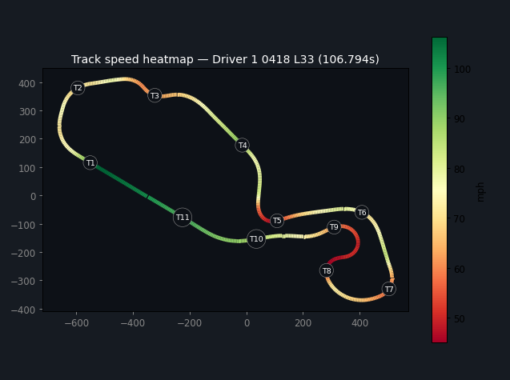
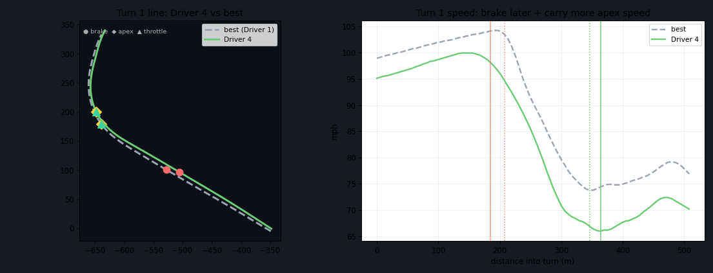

Lap stats, a lap player, speed heatmap, turn-by-turn coaching, and time-loss breakdowns. Runs entirely in your browser — nothing is uploaded.


Animate any lap with live speed and g-forces. Compare against any other lap, scrub frame-by-frame.
Full-circuit heatmap with auto-numbered turns, drawn from GPS position data.
Your line vs. the fastest through each corner. Plain-language suggestions on where to gain time.
Biggest gaps ranked by seconds available. Per-turn breakdown across drivers and stints.
Drop a whole day of sessions. Label drivers, merge stints, build a composite ideal lap.
Best, mean, median, std-dev, CV%, P95/P99 per driver. Caution laps excluded automatically.
Click above, or download the HTML file and open it from disk. Works offline.
One session or a full day. Parsed client-side in milliseconds — nothing leaves your machine.
Assign names to files. Match stints across sessions. Optional — the tool works without it.
Heatmap, lap player, corner coaching. Find your biggest opportunities, go faster next session.
.xrk files are fully supported. .xrz (compressed XRK) is handled via the browser's native decompressor on modern browsers. Both load via drag-and-drop.
Validated on AiM Solo-type GPS loggers. Other AiM devices (MX-series, Solo 2, EVO) may work but haven't been tested with sample files from those units yet. If your device produces different output, open a GitHub issue and attach a sample file.
Lap and sector times are exact — read directly from the lap markers the logger writes into the file. Speed and g-forces are GPS-derived at 10 Hz with light smoothing, so they're a strong directional guide rather than a substitute for a high-rate accelerometer or wheel-speed sensor. Turn boundaries and brake/apex/throttle points are auto-detected heuristics.
No. The analyzer is a single self-contained HTML file. Parsing, analysis, and all rendering run locally in your browser. There is no backend, no account, and no network request for your telemetry data.
No. Download AiM_XRK_Analyzer.html from the GitHub repo and open it from disk — it works fully offline.
Any track, anywhere — no track database needed. Lap markers are embedded in the file by the logger, and corners are auto-detected from the speed trace. The only thing that varies by track is the number of corners detected.
Try the live demo or open the analyzer with your own files.